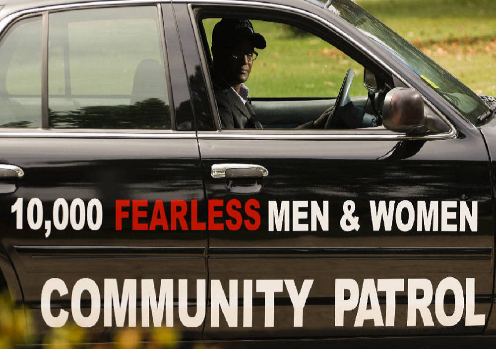

Community Patrol
Car, foot, and bike patrol focused on violence prevention and interruption, staffed by unarmed security personnel and trained community volunteers.

Modeled on 10,000 Fearless Men and Women
Community Patrol is modeled on the "10,000 Fearless Men and Women" program headquartered in Atlanta, GA, co-developed by Student Minister Abdul Sharrieff Muhammad and Reverend Timothy McDonald in an Atlanta neighborhood known as "the Bluff." The Chattanooga chapter has served the Alton Park area of South Chattanooga since 2015.
Our patrol zone runs west-to-east from E 3rd Street to Wilcox Blvd, and north-to-south from Chamberlain Avenue to N Holtzclaw — four zones in total. Patrol volunteers are recruited from the community they serve and trained under the supervision of unarmed security personnel.
The Life Repair and Response Center
The Center houses intake for Community Patrol's related services: the Conflict Resolution Center, a food pantry, counseling, youth programs, culinary arts, and training programs. It's also the front door to our Adopt-a-School Program, run in partnership with Urban Initiative at Orchard Knob Elementary and Orchard Knob Middle School using UTC volunteer college students and teachers.
Join the Patrol
We recruit and train community volunteers on an ongoing basis. Email thecommunityhaven@gmail.com to get involved.
Related programs run out of the Life Repair and Response Center: Conflict Resolution, G.R.I.E.V.E., Anger & Trauma Management, and the Youth Development Initiative.